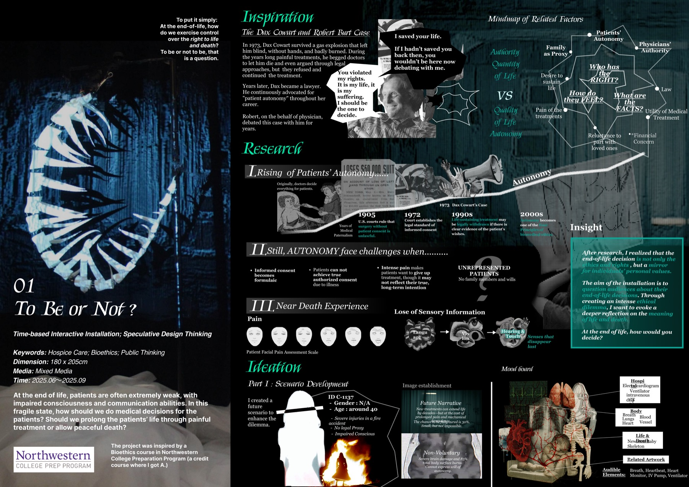
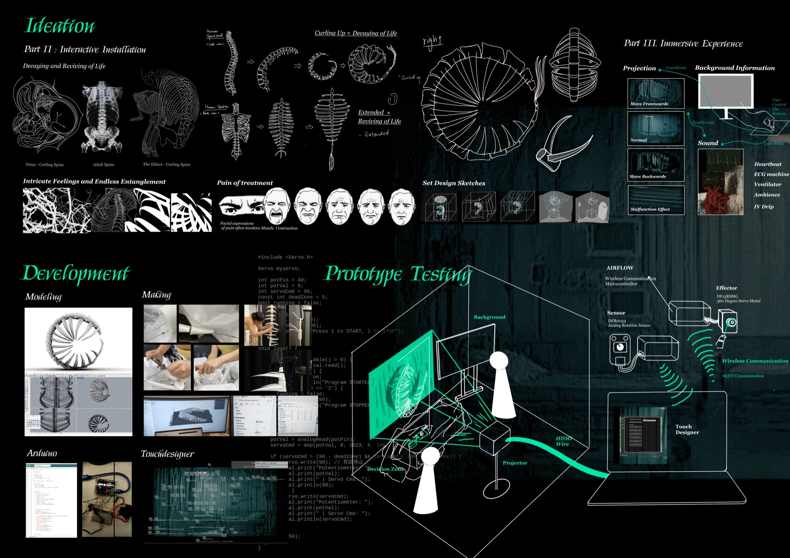
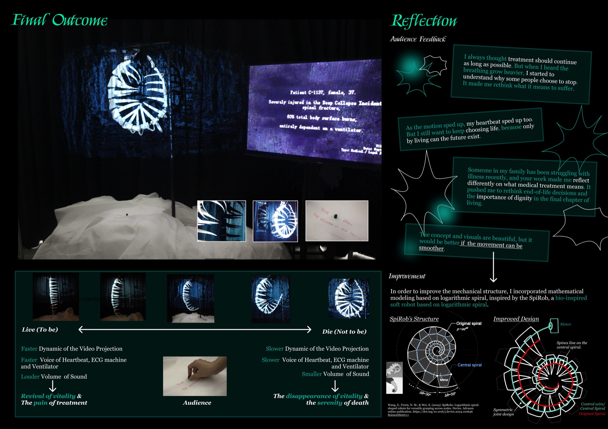

1 / 3TITLETo Be or Not?
临终决策互动装置
临终决策互动装置
TYPEInteractive Installation
DATE2025.06 — 2025.09
AWARDNorthwestern University, Bioethics (A)
ROLEConcept, design, prototyping
TOOLSArduino · TouchDesigner · DFRobot · 180×205cm
At the end of life, patients are often extremely weak, with impaired consciousness and communication abilities. In this fragile state, how should we do medical decisions for the patients? Should we prolong the patients’ life through painful treatment or allow peaceful death? A time-based interactive installation on end-of-life decisions and patient autonomy, inspired by my Northwestern bioethics course (grade A).